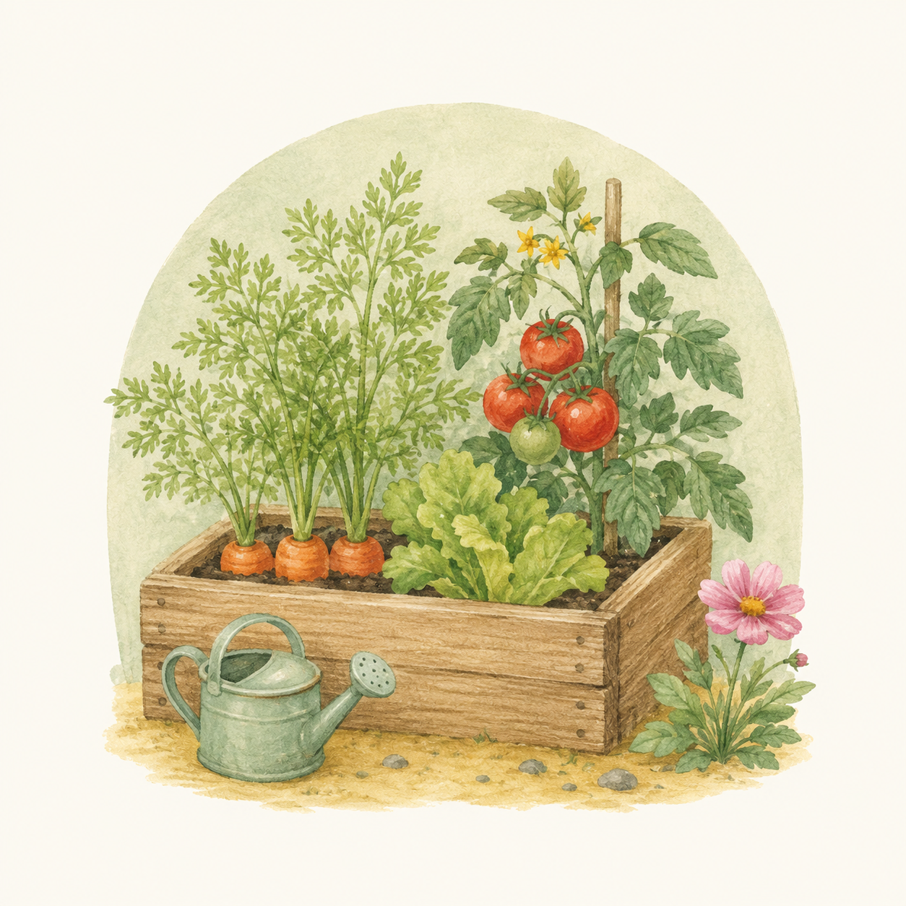

OUR HEART
園の特色
清華保育園がたいせつにしていること

基本方針
私たちの保育の根っこにあるもの
「ひとりひとりの心を大切にする保育」
保育を必要とする乳幼児を預かり、子どもの健全育成に力を注ぎます。養護と教育が一体となって豊かな人間性を持った子どもを育成し、家庭における子育てを支援するために全面的に協力できるよう配慮します。
保育目標
・ひとりで生きる力を養う
・遊びを通じて社会性を持つ
・生命のあるものと接する
・食育活動を通じた学び
・自立をする
育てたい子どもの姿
・元気でたくましい子ども
・進んで取り組む子ども
・思いやりのある子ども
「できた」という喜びが次の「やる気」を育てます
食育活動
食べたい気持ちを育て、命の大切さを伝える
菜園活動・農作業体験
体験菜園を所有しており、草花や野菜を育てます。収穫の歓び、食物の大切さを知り味わう体験を通じて、食への関心と感謝の心を育みます。
クッキング
園児によるクッキング活動を行っています。自分たちで育てた食材を使って調理することで、「食べたい気持ち」と「自分でつくる喜び」を体験します。
食事マナー・試食会
食事マナーの指導を日々の保育の中で行います。また、保護者と子どもが一緒に食べる試食会を開催し、園の給食を体験いただけます。
生命のあるものと接する
いのちの不思議さと尊さを体験する
自然とのふれあい
いろいろな場所に出かけて、動植物に触れたり見たりして、生命の不思議さと尊さを体験します。草花のほかに食べられる植物を育て、命をいただくことで心が育ちます。
充実したプログラム
年間を通じて専門講師による指導を実施しています
リトミック
月1回、全クラス対象。リズム感が身体に染み込んで集中力や記憶力、そして想像力を高めます。何よりも感じる心をはぐくみます。
指導料：全額園負担
魔法の English 365 days
4歳児は週1回、5歳児は週2回。毎日10分間のDVD視聴と単語カードを使ったゲームで、1年間で400以上の単語を耳にし、楽しく語彙力を身につけます。
指導料：全額園負担
サッカー教室
月2回、4・5歳児対象。チームワークを重視するゲームを通じて、協力・助け合いの精神が身につくと同時に体力もアップ。年1回対外試合も予定しています。
指導料：全額園負担
体育教室
月1回、3〜5歳児対象。体を動かす楽しさ、協力する大切さ、ルールを守る大切さ、頑張ればできるという達成感を体験します。
指導料：個人負担月300円
保護者アプリ「KidsView」
スマホひとつで園との連絡がもっと便利に
忙しい朝も、スマホでかんたん連絡
清華保育園では、保護者向けアプリ「KidsView（キッズビュー）」を導入しています。登降園の記録や連絡帳のやりとり、欠席・遅刻の連絡がすべてスマートフォンから行えます。朝の忙しい時間帯でも、電話をかける必要はありません。
登降園の打刻
アプリで登園・降園の記録ができます。送迎時の手続きがスムーズになります。
連絡帳
お子さまの体調や食事、睡眠の記録をアプリで確認。園での様子を写真付きでお届けすることもあります。
欠席・遅刻連絡
急なお休みや遅刻もアプリからワンタップで連絡OK。電話がつながりにくい朝の時間帯も安心です。